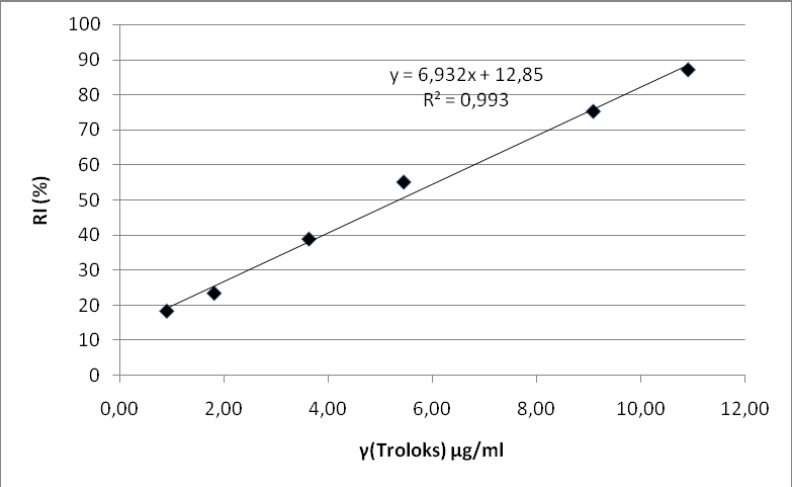
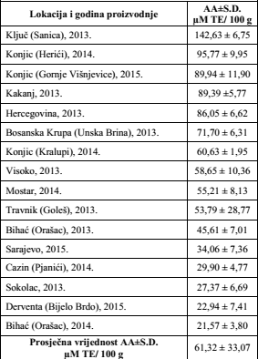
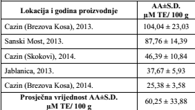
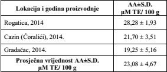
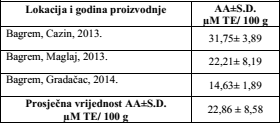
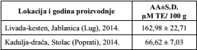

Rezultati
Dobivene su sljedeće vrijednosti relativne inhibicije (RI) izražene u %:
| Troloks (µg/mL) | RI* ± S.D.(%) |
| 0,91 | 18,27 ± 2,04 |
| 1,82 | 23,37 ± 1,06 |
| 3,64 | 38,8 ± 1,46 |
| 5,45 | 55,03 ± 2,43 |
| 9,09 | 75,19 ± 4,27 |
| 10,91 | 87,05 ± 1,19 |
|

Kalibraciona kriva troloksa za određivanje antioksidativne aktivnosti protiv DPPH |
Antioksidativne aktivnosti planinskog meda
| Lokacija i godina proizvodnje | AA±S.D.[µM TE/ 100 g] |
| Glasinac, 2014. | 242,63 ± 11,08 |
| Bjelašnica (Rakitnica), 2013. | 224,11 ± 5,39 |
| Ilijaš (Nišićka Visoravan), 2013. | 48,99 ± 16,03 |
| Prosječna vrijednost AA±S.D. [µM TE/ 100 g] | 171,91 ± 106,85 |
Antioksidativne aktivnosti vrijeskovog meda
| Lokacija i godina proizvodnje | AA±S.D.[µM TE/ 100 g] |
| Konjic (Brđani), 2014. | 261,42 ± 5,75 |
| Mostar (Bijelo Polje), 2014. | 96,72 ± 2,46 |
| Žepče, 2014. | 79,40 ± 7,85 |
| Konjic (Donje Selo), 2014. | 61,46 ± 7,87 |
| Sarajevo, 2015. | 59,61 ± 3,00 |
| Livanjsko polje, 2014. | 57,19 ± 2,24 |
| Duvno, 2014. | 41,40 ± 4,76 |
| Prosječna vrijednost AA±S.D. [µM TE/ 100 g] | 93,89 ± 75,95 |
Antioksidativne aktivnosti kaduljinog meda
| Lokacija i godina proizvodnje | AA±S.D.[µM TE/ 100 g] |
| Hercegovina, 2013. | 161,98 ± 6,44 |
| Mostar(Bijelo Polje), 2014 | 105,80 ± 16,90 |
| Žepče | 44,73 ± 11,16 |
| Stolac, 2014. | 39,15 ± 12,59 |
| Prosječna vrijednost AA±S.D. [µM TE/ 100 g] | 87,92 ± 57,87 |
Antioksidativne aktivnosti šumskog meda
| Lokacija i godina proizvodnje | AA±S.D.[µM TE/ 100 g] |
| Konjic(Hasanovići), 2014. | 152,83 ± 17,27 |
| Gradačac, 2014. | 115,98 ± 14,20 |
| Sarajevo, 2015. | 68,07 ± 13,18 |
| Kladanj(Ravne), 2013. | 39,10 ± 4,79 |
| Donji Vakuf, 2013. | 37,50 ± 5,48 |
| Ključ, 2013. | 35,49 ± 13,92 |
| Prosječna vrijednost AA±S.D. [µM TE/ 100 g] | 74,83 ± 49,07 |
Antioksidativne aktivnosti livadskog meda  |
|
Antioksidativne aktivnosti kestenovog meda  |
|
Antioksidativne aktivnosti lipovog meda  |
|
Antioksidativne aktivnosti bagremovog meda  |
|
Antioksidativne aktivnosti mješovitog meda  |